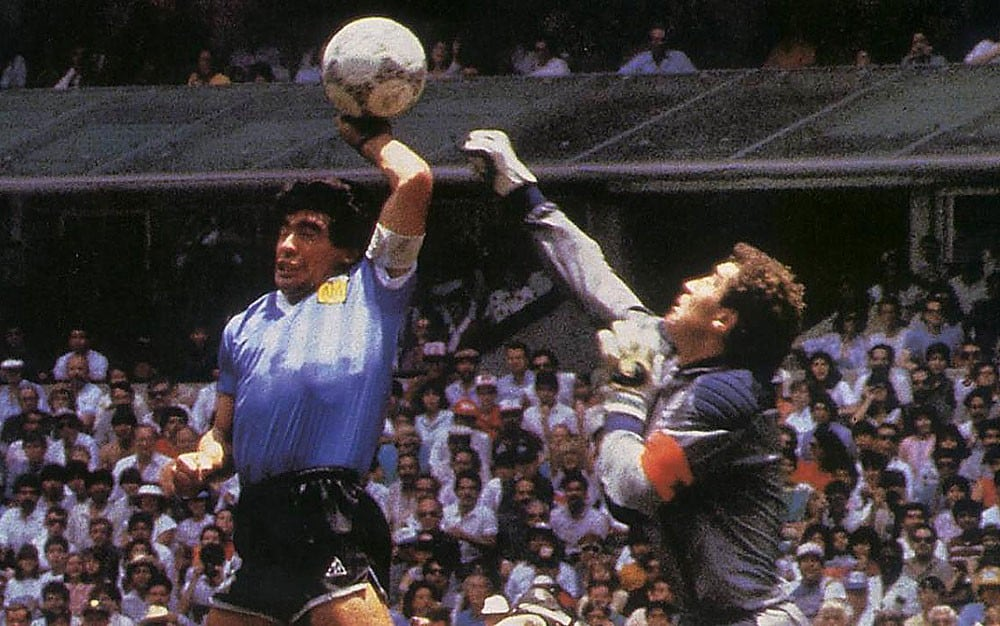

Dijego Armando Maradona bio je argentinski fudbaler i fudbalski trener. Podelio je titulu najboljeg fudbalera 20. veka s brazilskim fudbalerom Peleom.Karijeru je počeo u Argentinos juniorsima a zatim je igrao za Boku juniors, Barselonu, Napoli i Sevilju. U klupskoj karijeri najviše uspeha imao je noseći dres Napolija, sa kojim je osvojio dve titule prvaka Italije i jedan Kup UEFA. U drugom delu igračke karijere Maradona je imao problem sa kokainskom zavisnošću. Kažnjen je sa 15 meseci zabrane igranja fudbala pošto je 1991. bio pozitivan na doping kontroli. Kratko je igrao i za Njuels old bojse da bi profesionalnu igračku karijeru završio 1997, na 37. rođendan i to u dresu Boke juniors.
Gol rukom je obeležio ne samo jednu godinu nego i njegovu čitavu karijeru. Na Svetskom prvenstvu 1986. u Meksiku dvostruki je strelac u utakmici Argentine s Engleskom. Oba njegova gola na toj utakmici se i dan danas prepričavaju. Kod prvog je reč o pogotku koji je Dijego kasnije nazvao Božjom rukom.Drugi je na mnogim rang listama proglašen za najlepši gol svih svetskih prvenstava. Sam je predriblao polovinu engleskog tima i golmana Šiltona.Engleski komentator je uzviknuo da je prvi gol sigurno neregularan jer je postignut rukom, ali zato drugi vredi za deset. Na tom prvenstvu je Argentinu doveo do naslova prvaka sveta u dramatičnom dvoboju sa reprezentacijom Zapadne Nemačke (3:2).
Dana 18. marta 2005. Emir Kusturica je u Buenos Ajresu započeo snimanje dugometražnog dokumentarnog filma o Dijegu Armandu Maradoni. Maradona je insistirao da taj film snima baš Kusturica. Prva klapa filma pala je na stadionu “Bombonjera” u Buenos Ajresu, na proslavi stogodišnjice FK Boka kada je Maradona trčao sa bakljom u ruci počasni krug. Snimanje je nastavljeno u porodičnom krugu, na proslavi osamnaestog rođendana ćerke ove fudbalske legende. Za ovaj projekat zainteresovao se i Fidel Kastro, Maradonin prijatelj, i pozvao Kusturicu da ga poseti.Film je premijerno prikazan na festivalu u Kanu 2008. godine.
Maradona je primljen u bolnicu 2. novembra 2020. u La Plati, navodno zbog psiholoških razloga. Predstavnik bivšeg fudbalera rekao je da njegovo stanje nije ozbiljno.Dan kasnije, podvrgnut je hitnoj operaciji mozga.Pušten je 12. novembra nakon uspešne operacije na kućno lečenje i ostao je pod nadzorom lekara.Dana 25. novembra 2020, u dobi od 60 godina, Maradona je pretrpeo srčani udar i preminuo u svom domu u Tigreu u provinciji Buenos Ajres.Maradonin kovčeg — zaogrnut argentinskom nacionalnom zastavom i tri dresa Maradone sa brojem 10 (Argentinos juniorsa, Boke juniors i Argentine) — bio je izložen u predsedničkoj palati Kasa Rosada, a hiljade ožalošćenih navijača su prošli kraj njegovog kovčega.Dana 26. novembra 2020. godine održana je privatna ceremonija sahrane i Maradona je sahranjen pored roditelja na groblju Žardin de Bela Vista u mestu Bela Vista kod Buenos Ajresa.Ovaj dan predstavlja dan žalosti za ljubitelje fudbala,i od tog dana stadion Napolija nosi ime Diego Armando Maradona.
| Ovo su Top 3 najbolja fudbalera 21. veka. |
| Sajt uradio Nikola Zindović |
| Pročitajte o Sao Paulu. |